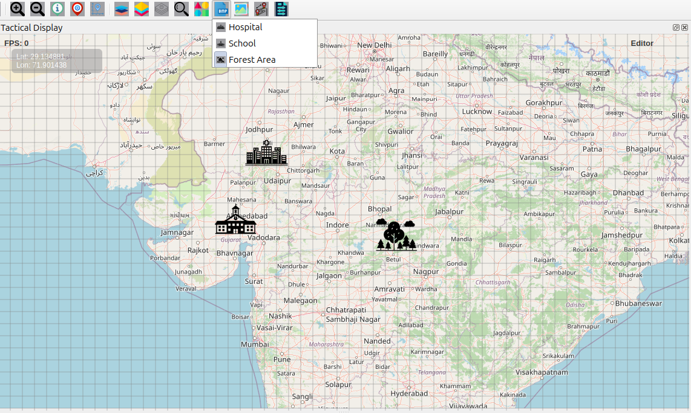
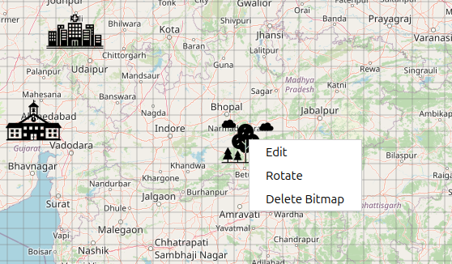

Bitmap Features User Guide
Bitmap Icon Overview
The Bitmap button allows you to place preset icons and custom images on the map for visual markers, points of interest, and custom annotations.
How to Use Bitmaps
Accessing Bitmap Tools
Click the Bitmap icon on the Design Toolbar
A dropdown menu appears with preset bitmap options
Select the bitmap type you want to place
The cursor changes to a crosshair, indicating placement mode
Available Preset Bitmaps
Hospital
Medical facilities and health services
Emergency medical locations
Health infrastructure markers
School
Educational institutions
Learning centers
Academic facilities
Forest Area
Wooded regions
Natural reserves
Environmental zones
Park and recreation areas
{kind=link}

Placing Bitmaps on Map
Placement Process
Select the bitmap type from the dropdown menu
Click on the map at the desired location
The bitmap appears immediately at the clicked position
System automatically returns to Move Mode after placement
Bitmap Management & Editing
Selecting Bitmaps
Switch to Move Mode (hand icon)
Click directly on any bitmap to select it
Selected bitmaps can be moved or edited
Moving Bitmaps
Select a bitmap in Move Mode
Click and drag to reposition
Coordinates update in real time during movement
Editing Bitmaps (Right-Click Menu)
Right-click any bitmap for the following options:
Edit – Enter edit mode with resize handles
Rotate – Activate rotation handles for orientation
Delete Bitmap – Permanently remove the bitmap
Resizing Bitmaps
Right-click the bitmap → Edit
Resize handles appear at corners
Drag handles to adjust size
Aspect ratio remains locked during resizing
Click outside the bitmap to exit edit mode
Rotation
Right-click the bitmap → Rotate
A rotation handle (yellow circle) appears
Drag the handle to rotate the bitmap
A visual rotation guide is displayed
Smooth rotation feedback shows angle changes
{kind=link}
